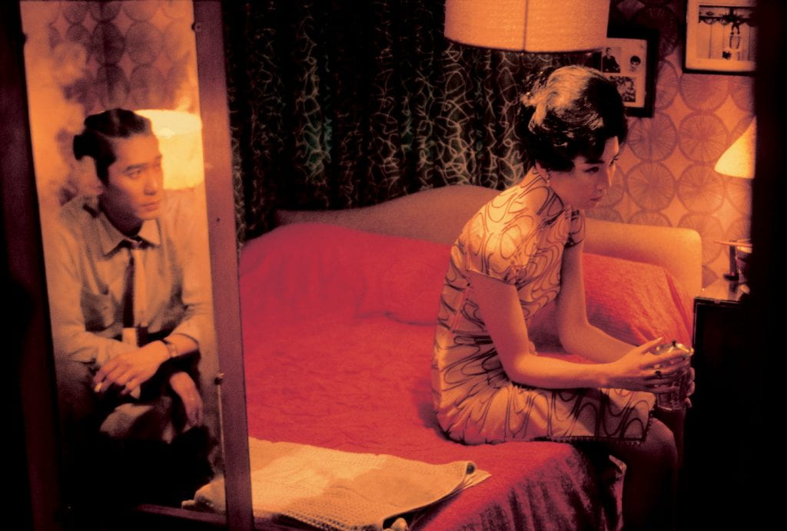
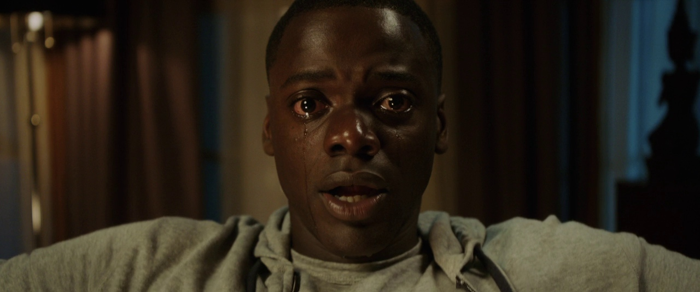
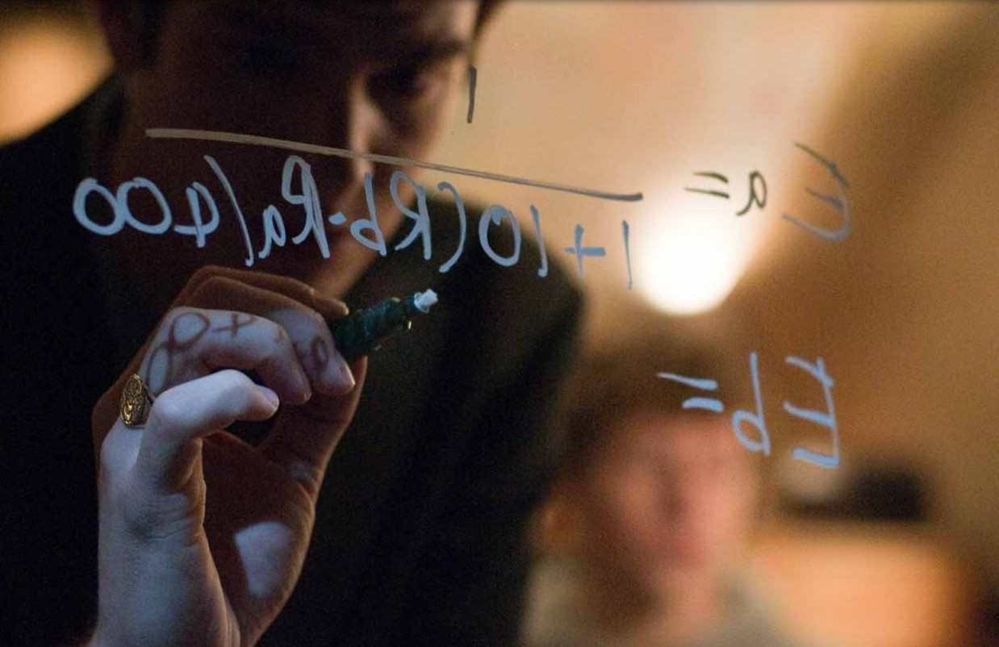
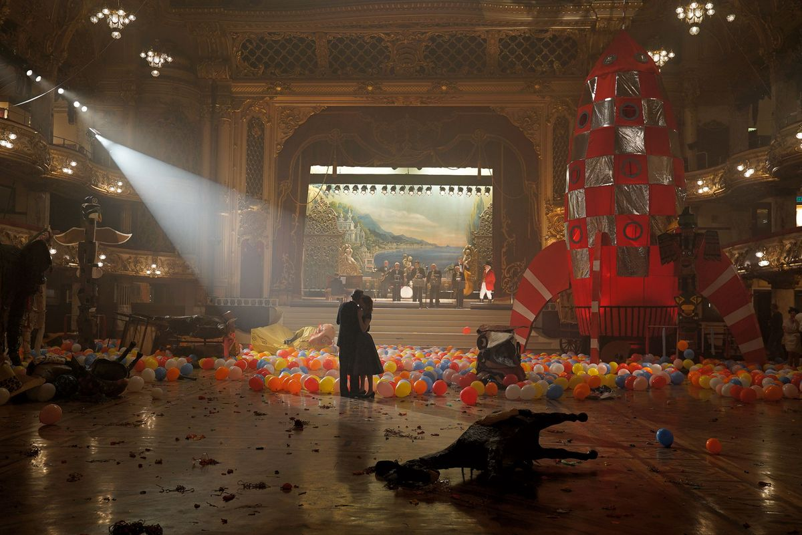

Shot analysis
Get an instant breakdown of shot type, camera angle and lighting setup for any still you upload or any frame you pick from a film.

ReFrame
Film education, reframed
Upload any frame and ReFrame breaks it down: shot, angle, light, and why the director chose it.
Scene 01 — Features
Get an instant breakdown of shot type, camera angle and lighting setup for any still you upload or any frame you pick from a film.

Go past "it looks good." ReFrame explains why a shot was framed the way it was and what the director wanted you to feel.

Every result links to a bite-sized lesson on the technique behind it, so each analysis teaches you something you keep.

Step-by-step guides show you how to rebuild the shot with a phone, a desk lamp and whatever you have at home. No pro gear required.

Scene 02 — Meet Nolan
ReFrame's AI film tutor, named after Christopher Nolan. Point your phone at any screen and Nolan tells you what you're watching, how it was filmed, and why it works.
✦ Nolan recognised · 96% match
Get Out
Why does it feel so claustrophobic?
Point your phone at a TV or laptop, or upload a still. Nolan names the film, the director and the scene.
Camera, lens, light and movement: how the shot was likely made, in plain words, not jargon.
Ask anything about the frame. Nolan answers like a tutor, then links the lesson and a way to recreate it.
Scene 03 — How it works
Drop in a still from your camera roll or choose a moment from a film in the library.
Nolan, the AI tutor, reads the shot type, angle, lighting and the director's likely intent in seconds.
Open the linked lesson, then try the shot yourself with the gear you already own.
Scene 04 — Mission
Not everyone can attend film school or afford professional equipment. ReFrame gives anyone with a phone a practical way to build real cinematography skills by understanding why a shot works, not just that it does.
Your progress is tracked over time. Watch your vocabulary grow, revisit techniques you've mastered, and see how your own shots improve lesson by lesson.
Scene 05 — Showcase
Drag, swipe or use the arrows →
New analysis
What are we watching?
Or pick from the library
Get Out
2017 · Jordan Peele
Director's intent
The centred, unbroken stare traps us inside Chris's paralysis. We can't look away either.
✦ Nolan · AI film tutor
Lesson 04 · 4 min
Shallow depth of field
A wide aperture keeps only one plane sharp. Fincher puts the equation in focus and lets the people blur: the idea matters more than them.
Recreate · Phantom Thread
One beam, one lamp.
Your reel
23 shots read.
Free to download. Every frame you study makes you a better filmmaker.